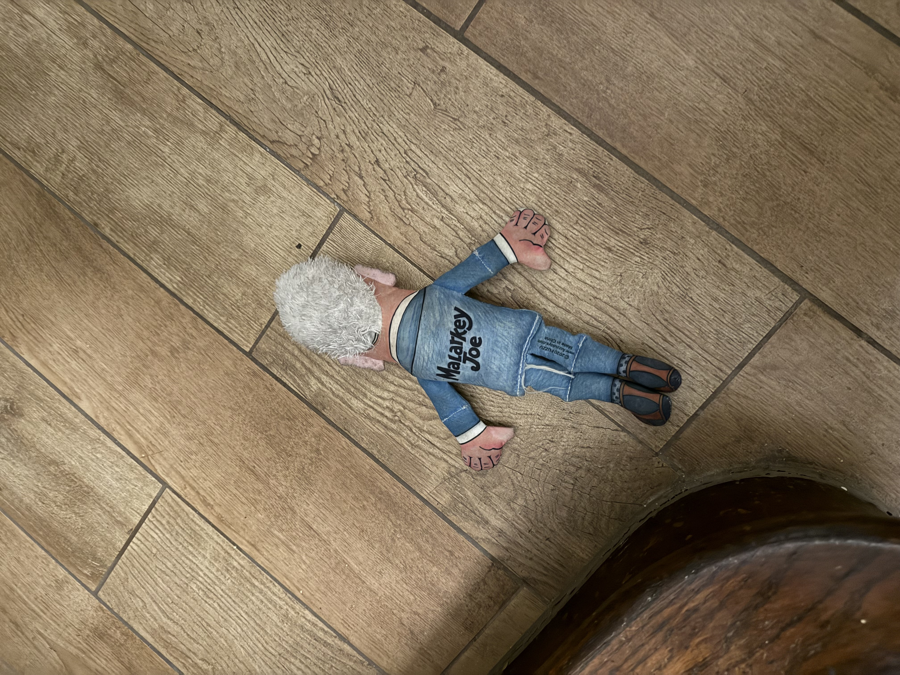

Very protective of his owners. Barks at anyone and anything that moves in the street.
Where did we get him?
In the great land of Long Island in the town of Ronkonkoma. He was bred and we picked him up.
How long have we had him?
6 years!!!
How well is he treated?
Treated quite well. He gets treats often and gets to lay on the recliner with Mom during TV News Time! Gets fed every day at 5 PM ET and gets walked at least twice a day. Gets very excited when people come home!
Favorite member of the household?
Mom
Favorite toy?
He is not a fan of Malarkey Joe Biden...
